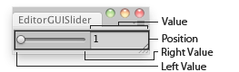

EditorGUI.Slider
public static float Slider(Rect position,
string label,
float value,
float leftValue,
float rightValue);
public static float Slider(Rect position,
GUIContent label,
float value,
float leftValue,
float rightValue);
Parameters
| position | Rectangle on the screen to use for the slider. | |
| label | Optional label in front of the slider. | |
| value | The value the slider shows. This determines the position of the draggable thumb. | |
| leftValue | The value at the left end of the slider. | |
| rightValue | The value at the right end of the slider. |
Returns
float The value that has been set by the user.
Description 描述
Makes a slider the user can drag to change a value between a min and a max.

Slider in an Editor Window.
using UnityEngine; using UnityEditor;
// Editor script that lets you scale the selected GameObject between 1 and 100
class EditorGUISlider : EditorWindow { float scale = 1.0f;
[MenuItem("Examples/EditorGUI Slider usage")] static void Init() { var window = GetWindow<EditorGUISlider>(); window.position = new Rect(0, 0, 150, 30); window.Show(); }
void OnGUI() { scale = EditorGUI.Slider(new Rect(5, 5, 150, 20), scale, 1, 100); }
void OnInspectorUpdate() { if (Selection.activeTransform) { Selection.activeTransform.localScale = new Vector3(scale, scale, scale); } } }
public static void Slider(Rect position,
SerializedProperty property,
float leftValue,
float rightValue);
public static void Slider(Rect position,
SerializedProperty property,
float leftValue,
float rightValue,
string label);
public static void Slider(Rect position,
SerializedProperty property,
float leftValue,
float rightValue,
GUIContent label);
Parameters
| position | Rectangle on the screen to use for the slider. | |
| label | Optional label in front of the slider. | |
| property | The value the slider shows. This determines the position of the draggable thumb. | |
| leftValue | The value at the left end of the slider. | |
| rightValue | The value at the right end of the slider. |
Description 描述
Makes a slider the user can drag to change a value between a min and a max.